1Entrar
A primeira tela. Depois de entrar uma vez, o app lembra de você por 120 dias.
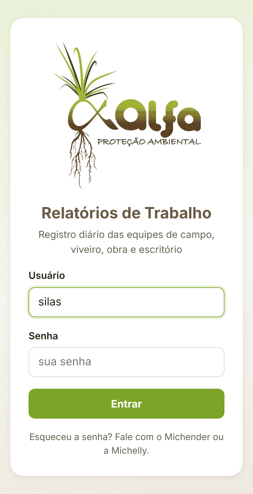
- Usuário obrigatórioO seu primeiro nome, em letras minúsculas (ex.: silas). Não tem espaço nem acento.
- Senha obrigatórioNo primeiro acesso, a senha provisória que a Alfa mandou. Depois, a sua senha definitiva.
- EntrarSe aparecer "Usuário ou senha incorretos", confira as letras minúsculas e tente de novo.
2Primeira vez: cadastre a sua senha
Toda senha que a Alfa manda é provisória. O app só libera o uso depois que você cria a sua.
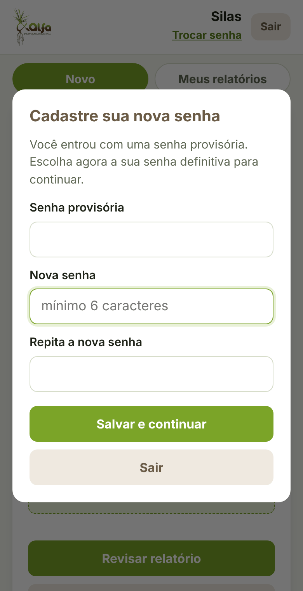
- Senha provisóriaSó aparece se você fechou o app antes de trocar. Digite a que recebeu.
- Nova senha obrigatórioMínimo de 6 caracteres. Tem que ser diferente da provisória. Escolha uma que você não vá esquecer.
- Repita a nova senha obrigatórioIgualzinha à de cima.
- Salvar e continuarPronto: a partir daqui o app abre direto na tela de Novo relatório.
3A tela principal: Novo relatório
É onde você lança o trabalho do dia. Em cima ficam o seu nome, o botão Trocar senha e o Sair. As abas trocam de tela.
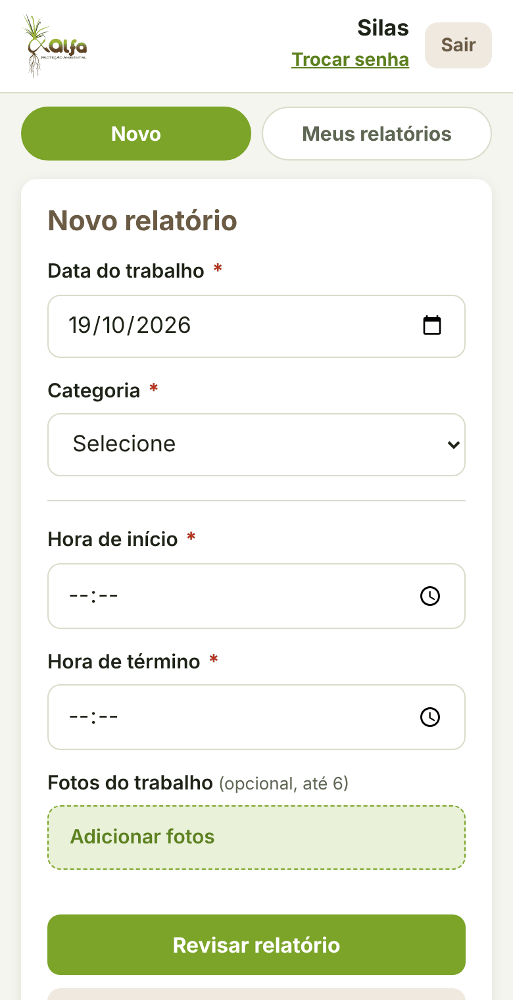
- Abas: Novo e Meus relatóriosNovo é para lançar. Meus relatórios mostra o que você já enviou. Administradores veem uma terceira aba, Administração.
- Data do trabalho obrigatórioJá vem com a data de hoje. Pode voltar para um dia anterior, se esqueceu de lançar. Não aceita data futura.
- Categoria obrigatórioEscolha o tipo do trabalho: Topografia / Campo, Viveiro de Mudas, Obra, Ibitirama e outros, ou Escritório. Os campos de baixo mudam conforme a categoria (seção 4).
4Categorias: o que cada uma pede
Ao escolher a categoria, o app mostra só os campos dela. Os de asterisco vermelho são obrigatórios.
Topografia / Campo
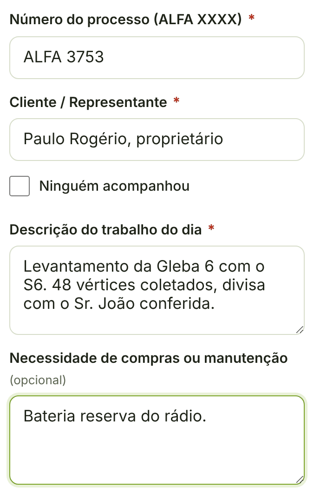
- Número do processo obrigatórioNo formato ALFA XXXX (ex.: ALFA 3753). Está na pasta e na ordem de serviço.
- Cliente / Representante obrigatórioQuem acompanhou o serviço. Se não houve ninguém, marque "Ninguém acompanhou" e o campo é dispensado.
- Descrição do trabalho do dia obrigatórioO que foi medido, equipamento usado, quantos pontos, dificuldades.
- Necessidade de compras ou manutenção opcionalEPI, bateria, insumo, conserto de veículo.
Viveiro de Mudas
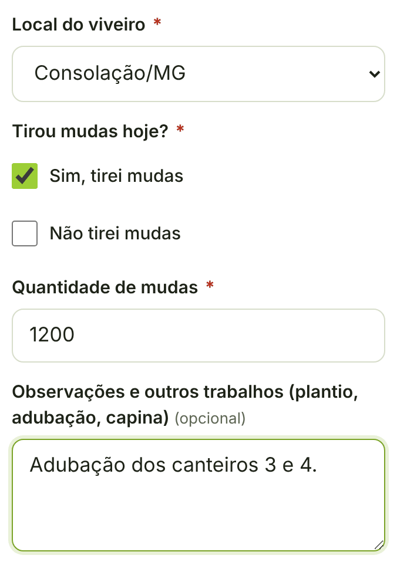
- Local do viveiro obrigatórioSão Miguel (Cambuí) ou Consolação.
- Tirou mudas hoje? obrigatórioMarque "Sim, tirei mudas" ou "Não tirei mudas". Um dos dois precisa estar marcado.
- Quantidade de mudas obrigatório se tirouSó aparece quando marca "Sim". Número maior que zero.
- Observações e outros trabalhos opcionalPlantio, adubação, capina, irrigação.
Obra
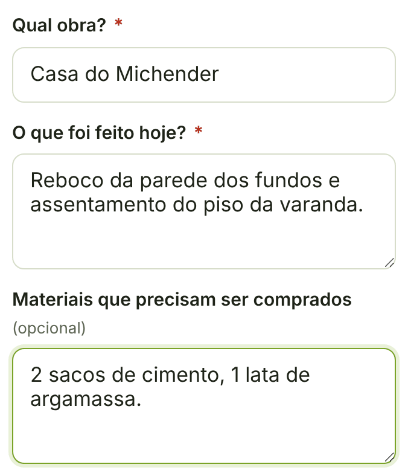
- Qual obra? obrigatórioO nome pelo qual a obra é conhecida (ex.: Casa do Michender).
- O que foi feito hoje? obrigatórioAs etapas executadas no dia.
- Materiais que precisam ser comprados opcionalListe com quantidade, para a compra sair certa.
Ibitirama e outros
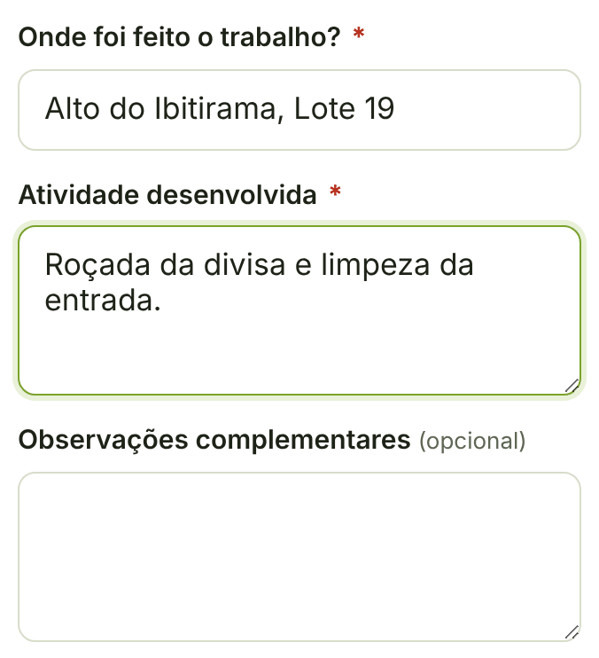
- Onde foi feito o trabalho? obrigatórioLote, trecho ou local (ex.: Alto do Ibitirama, Lote 19).
- Atividade desenvolvida obrigatórioRoçada, limpeza, cerca, plantio, manutenção.
- Observações complementares opcional
Escritório
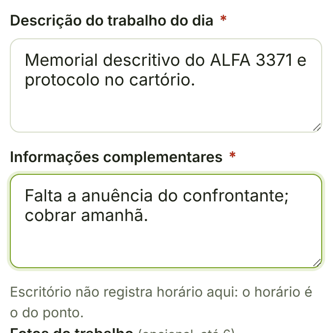
- Descrição do trabalho do dia obrigatórioProcessos trabalhados, documentos feitos, atendimentos, protocolos.
- Informações complementares obrigatórioPendências, recados, o que ficou para amanhã.
5Horário e fotos
Ficam embaixo dos campos da categoria. Valem para todas, menos Escritório.
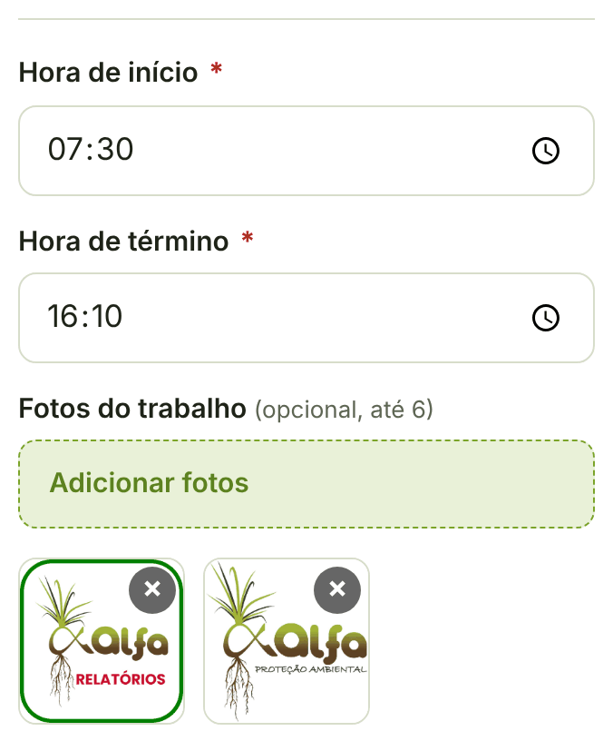
- Hora de início obrigatórioQuando o trabalho começou.
- Hora de término obrigatórioPrecisa ser depois da hora de início, senão o app avisa.
- Fotos do trabalho opcionalToque em "Adicionar fotos" e escolha da galeria ou tire na hora. Até 6 por relatório. O app reduz o tamanho antes de enviar, para não gastar seus dados. Para tirar uma foto, toque no X dela.
6Revisar e enviar
Nada vai para a Alfa sem você conferir antes. São dois toques: Revisar relatório e Confirmar e enviar.
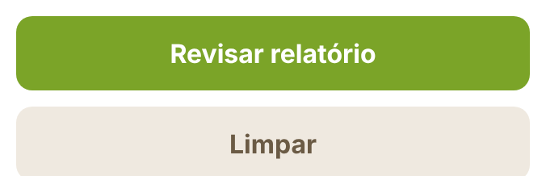
- Revisar relatórioConfere o que você preencheu e monta a prévia.
- LimparApaga tudo o que está na tela e começa de novo. Não tem volta.
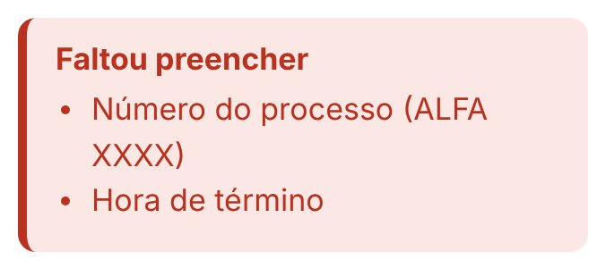
Faltou alguma coisa? Aparece a caixa vermelha "Faltou preencher" com a lista do que falta, e o campo fica contornado de vermelho. Preencha e toque em Revisar de novo.
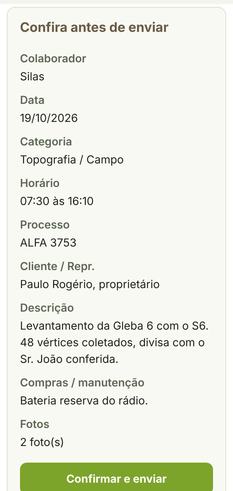
- Confira antes de enviarA prévia mostra o relatório pronto, do jeito que a Alfa vai receber.
- Confirmar e enviarEnvia. Aparece "Relatório enviado." e o app pula para Meus relatórios.
- Voltar e editarVolta para o formulário com tudo preenchido, para corrigir.
7Meus relatórios
Tudo o que você enviou nos últimos 40 dias. Os mais antigos continuam guardados na Alfa.
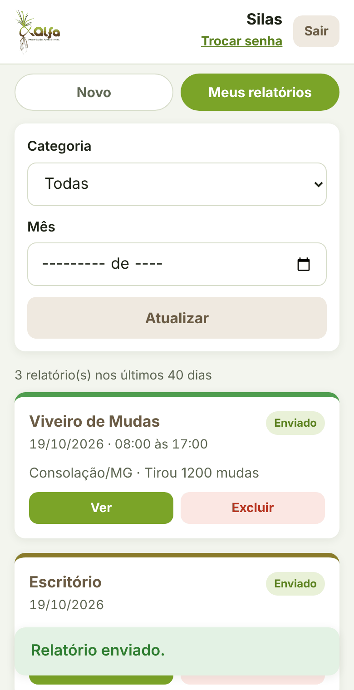
- FiltrosPor categoria e por mês. Toque em Atualizar para buscar de novo.
- Cada cartão é um relatórioMostra categoria, data, horário, um resumo e a etiqueta Enviado (ou quantas fotos tem).
- VerAbre o relatório completo, com as fotos.
- ExcluirPede um segundo toque: o botão vira "Confirmar exclusão" por 5 segundos. Se não confirmar, nada acontece.
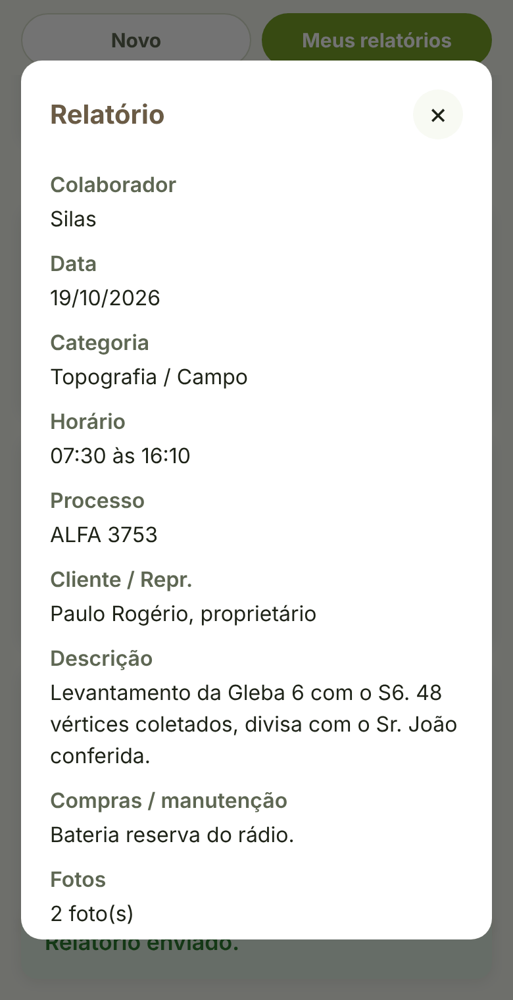
O relatório aberto mostra todos os campos preenchidos e as fotos. Toque numa foto para abrir em tamanho maior. O X no canto fecha.
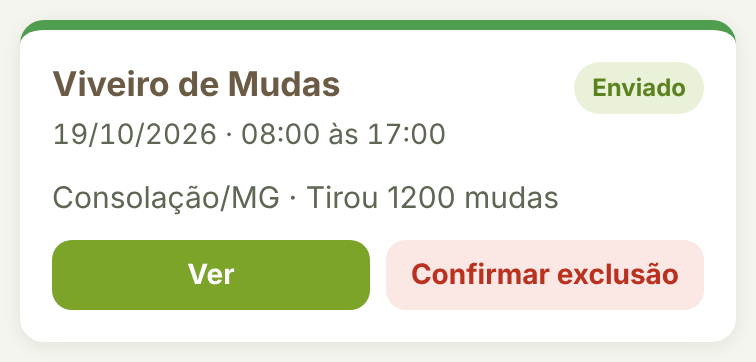
8Sem sinal no campo
Preencha e envie do mesmo jeito. O app guarda no aparelho e manda sozinho quando o sinal voltar.
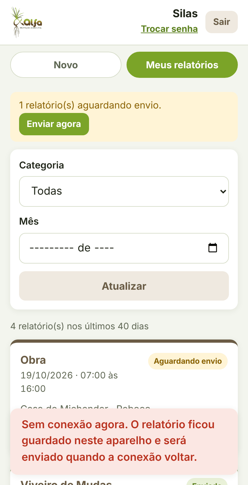
- "Sem conexão agora"É o aviso de que o relatório ficou guardado no aparelho. Não é erro.
- Faixa amarela "aguardando envio"Mostra quantos relatórios estão na fila. O botão Enviar agora tenta mandar na hora.
- Etiqueta "Aguardando envio"No cartão do relatório, até ele subir. Depois vira Enviado.
9Trocar senha
O link fica embaixo do seu nome, no alto da tela.
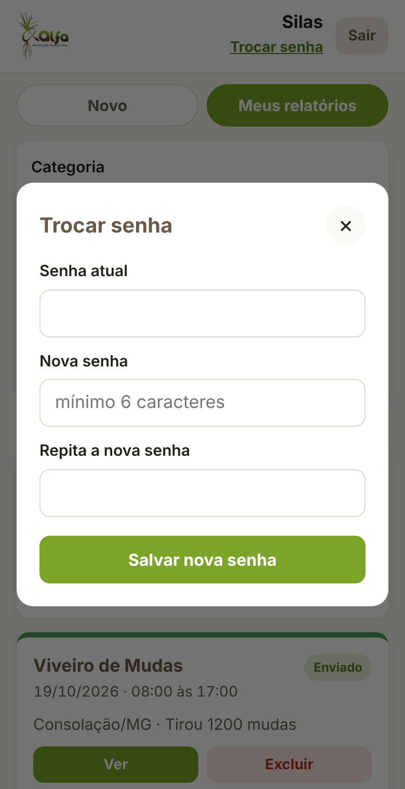
- Senha atual obrigatório
- Nova senha obrigatórioMínimo de 6 caracteres.
- Repita a nova senha obrigatório
- SairO botão Sair, ao lado do seu nome, encerra a sessão neste aparelho. Use quando emprestar o celular ou trocar de aparelho.
10Administração só administradores
Michender e Michelly veem a terceira aba. Nela ficam os relatórios de toda a equipe, a exportação e o cadastro de colaboradores.
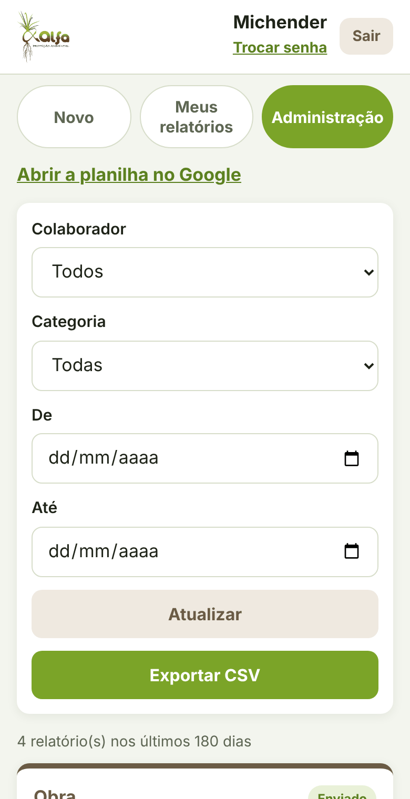
- Abrir a planilha no GoogleLeva direto ao banco de dados, onde está tudo, para sempre.
- FiltrosColaborador, categoria e período (De / Até). Sem filtro, mostra os últimos 180 dias.
- Exportar CSVGera o arquivo com os relatórios filtrados e já abre no Excel. O arquivo fica salvo em Relatórios Alfa / Exportações, no Drive.
- CartõesIguais aos de Meus relatórios, mas com o nome de quem lançou. Ver e Excluir funcionam do mesmo jeito.
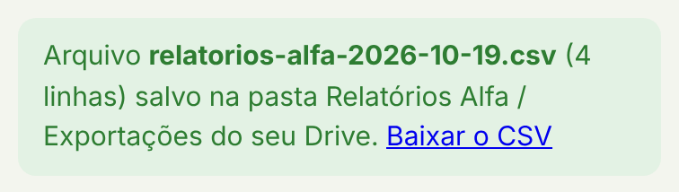
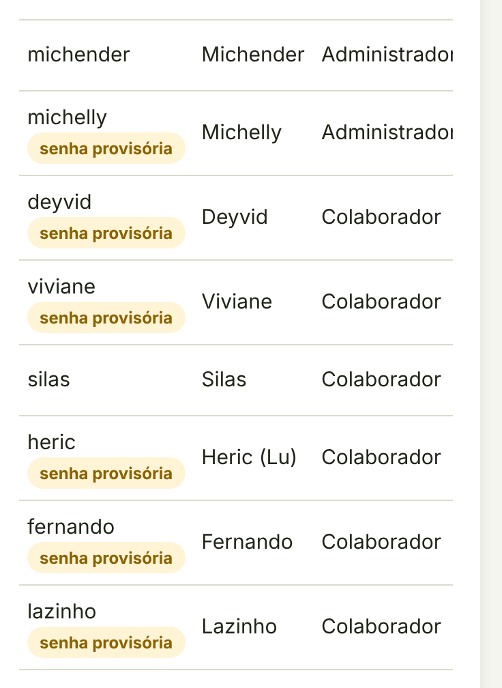
Colaboradores lista todo mundo: usuário, nome, perfil e se está ativo. A etiqueta "senha provisória" avisa quem ainda não cadastrou a senha definitiva. Editar abre o formulário da pessoa.
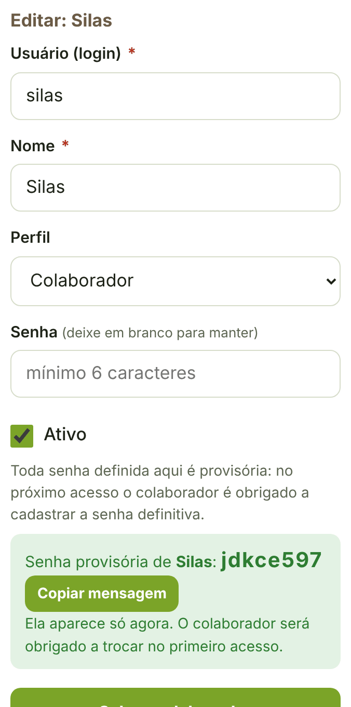
- Usuário (login) obrigatórioLetras minúsculas, números, ponto ou hífen; de 2 a 30 caracteres. Depois de criado não muda.
- Nome obrigatórioComo aparece nos relatórios.
- PerfilColaborador ou Administrador.
- Senha obrigatório para novoMínimo de 6 caracteres. Toda senha definida aqui é provisória: a pessoa troca no primeiro acesso. Ao editar, deixe em branco para manter.
- AtivoDesmarque para quem saiu. A pessoa não entra mais; os relatórios dela ficam guardados.
- Gerar senha provisóriaPara quem esqueceu a senha. Aparece uma senha nova e o botão Copiar mensagem, pronta para o WhatsApp. A senha antiga para de valer na hora.
Resumo: o que é obrigatório em cada categoria
Data e categoria são sempre obrigatórias. Fotos nunca são.
| Categoria | Obrigatório | Opcional | Horário |
|---|---|---|---|
| Topografia / Campo | Número do processo (ALFA XXXX); Cliente / Representante (ou "Ninguém acompanhou"); Descrição do trabalho | Compras ou manutenção | Sim |
| Viveiro de Mudas | Local do viveiro; Tirou mudas (sim ou não); Quantidade, se tirou | Observações e outros trabalhos | Sim |
| Obra | Qual obra; O que foi feito | Materiais a comprar | Sim |
| Ibitirama e outros | Onde foi feito; Atividade desenvolvida | Observações complementares | Sim |
| Escritório | Descrição do trabalho; Informações complementares | Não |